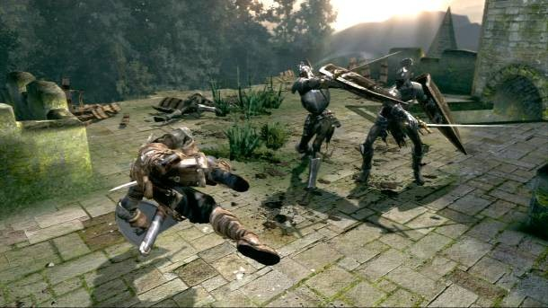
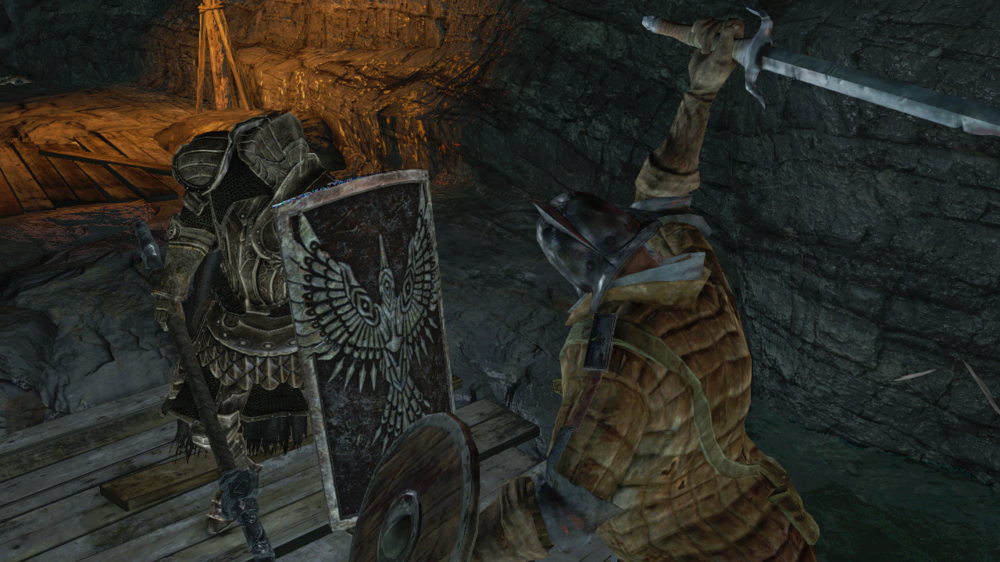
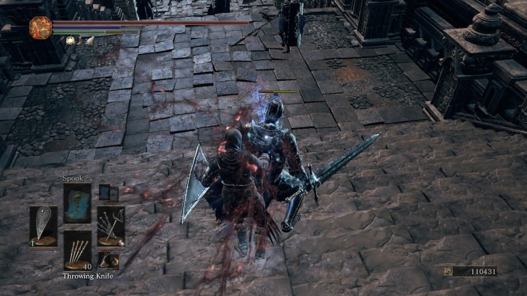
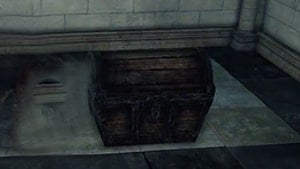
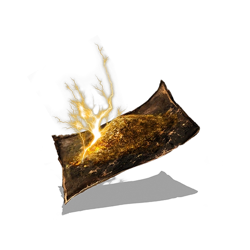

Dodging
Dodging is easily the most valuable skill in the game, it's the one thing that stands between you getting crushed by a giant hammer, and making it to your next bonfire. Dodging is important because it gives you invincibility frames, which are frames that make you completely immune to damage while they are active. Timing a dodge is crucial because if you can time it to where those frames are active while being attacked, you will take no damage. However, the amount of frames you have is very tiny, which means that if you time your dodge too late or too early, you will be out of the dodge window and take full damage from the attack. Fortunately, Dark Souls 2 is the onlt game in the series that actually has a dodge frmaes attribute, meaning that the more points you put into it, the more frames you have. Most of the time you spend in the game will be on dodging attacks, so it is recommended to upgrade this skill first.
Blocking
Blocking is another valuable tactic to use in this game. If you've played any fantasy, action-adventure, or any other RPG, you know exactly what I'm talking about. Blocking in Dark Souls 2 is the art of blocking an attack to reduce or even negate the damage of an enemy's attack. This art is crtical in desperate moments when you are at low health and can save you from death on many occassions. However, your blocking is limited to how much stamina you have, meaning that if you don't have enough energy, you won't be able to stop the attack. To add to that, some attacks are completely unblockable, makingthis tactic useless on some occassions. The damage you negate is also dependent on the shield you use, some only negate 85% of damage, some 75, and some even block all physical damage. Some shields also negate elemental damage, making them helpful against elemental bosses. Finally, you can parry with certain shields. Parrying an attack leaves your opponent wide open for either a series of attacks, or a reposite for massive damage. However, the timing of this is very short, so expect to practice this skill for a while.
Backstabs
Backstabs are a unique, but powerful way to deal a great amount of damage to your opponent in one quick move. The move involves getting behind you opponent and then attacking them when there guard is down. If successful, an animation will play out that deals heavy damage to you opponent. Be warned however, as this will not work on bosses or enemies far larger than your character. This attack is also finicky on what weapons deals the most damage. For instance, daggers and rapiers deal massive damage when it comes to backstabs, while weapons like maces and hammers do low damage. One final thing to know about backstabs is that, it not exactly accurate on what is a backstab and what isn't. Sometimes you can do it perfectly, sometimes you'll be right behind your enemy and the backstab won't trigger, making the backstab feature not the most accurate and reliable feature in the game.
Stay Vigilant
Dark Souls 2 is a game that requires you to pay attention to anything and everything at all times. Enemies can drop down out of nowhere, attack you from above or below, or even knock you off the side of a cliff. Every minute detail counts, you see a puddle of the ground, stay away from it. You see an empty room with no enemies, look up. You see a chest sitting in the open, do not open it! Two of the most common threats are mimics and cursed jars. Mimics are monsters that look like chests. You open it and, well, you die. To find these chests, you either have to attack it before opening it, or look and see if the chest moves at all. Cursed jars are another threat to look out for, these jars give you the cursed status effect, which turns you undead and lowers your health. However, these jars are easier to maintain, as smashing them will prevent you from being cursed. All in all, pay attention to your surroundings.
Use Your Items
Dark Souls 2 has a large variety of items that players can use to overcome bosses or hordes of enemies. Three common items are effigies, resin, and life gems. Effigies are common items dropped by enemies or found in chests as you explore the game. These items are used to restore your chracter to their human form, making them stronger. It also removes the limit on your health bar, allowing you to have the maximum amount of health. These can be very useful when you need to maximize your health to prepare for a tough boss. The second item is pine resin. Pine resin is less common than life gems and effigies, but they are extraordinarily powerful. There's resin for lightning, fire, and poison, all of which are common weaknesses for bosses in this game. However, the duration of the resin is usually brief, lasting about 90 seconds, so when you use this resin it's recommend to focus heavily on your attacks. Finally, you have life gems. Life gems are very commom healing items that slowly regenerate your health while active. Life gems are cheap and can be dropped by almost any enemy in the game. The neat trick about life gems is that you can use more than one at a time, which increases the speed of regeneration. There are also more potent life gems, however they are far less common. The biggest con of lifegems is that it's a slow healing process, meaning that one heavy attack from an enemy can take away all that health in an instant. I recommend having life gems in the early game, but stick to Estus for the later fights.
